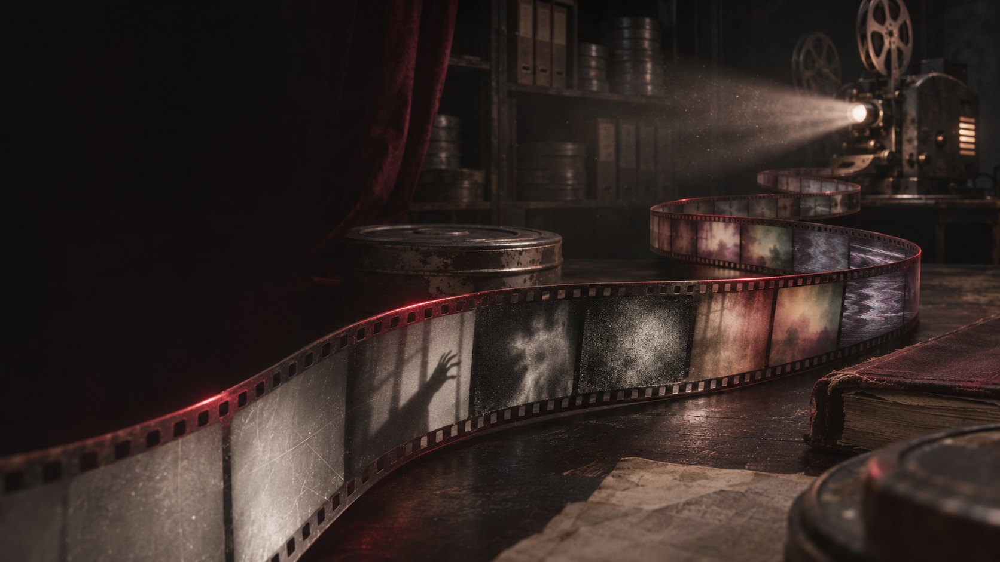

FILE 003 — CHRONOLOGY / 恐怖映画年表
HORROR TIMELINE
A chronological map of the films currently represented in the Horror Aesthetic review archive. Choose a decade, move through release years and open each film dossier.

309Film dossiers
—Year span
—Decades
J-HORROR 恐怖 MILESTONESВЕХИ
- 1964KwaidanКайданGhost stories as painted stage sets: slow, formal, unforgettable.Истории о призраках как расписанные декорации: медленно, строго, незабываемо.
- 1964OnibabaОнибабаA mask, a field of reeds and a pit: folk horror before the term existed.Маска, заросли камыша и яма: фолк-хоррор раньше, чем появилось слово.
- 1968KuronekoКуронэкоVengeful spirits haunt the woods around a ruined house.Мстительные духи бродят по лесу вокруг разрушенного дома.
- 1977HausuХаусуA house that eats its guests, filmed like a fever dream.Дом, который съедает гостей, снятый как лихорадочный сон.
- 1989Tetsuo: The Iron ManТэцуо: Железный человекBody horror in metal and static from the Japanese underground.Боди-хоррор из металла и помех из японского андерграунда.
- 1997CureЛекарствоCalm, hypnotic dread: murders without a visible cause.Спокойный гипнотический страх: убийства без видимой причины.
- 1997Perfect BlueИдеальная грустьFame, obsession and a collapsing identity in animation.Слава, одержимость и распад личности в анимации.
- 1998RinguЗвонокThe cursed videotape that became a template for a decade of ghost films.Проклятая видеокассета, ставшая шаблоном для целого десятилетия фильмов о призраках.
- 1998TomieТомиA girl who will not stay dead, adapted from Junji Ito's manga.Девушка, которая не остаётся мёртвой, по манге Дзюндзи Ито.
- 1999AuditionПрослушиваниеA quiet romance that turns into something else entirely.Тихая романтика, которая превращается во что-то совсем другое.
- 2001PulseПульсLoneliness spreads through the network like an infection.Одиночество расходится по сети, как заражение.
- 2002Ju-On: The GrudgeПроклятиеA curse that follows anyone who enters the house.Проклятие, которое идёт за каждым, кто вошёл в дом.
- 2002Dark WaterТёмная водаA leak in the ceiling and a child who should not be there.Протечка на потолке и ребёнок, которого здесь быть не должно.
- 2005Noroi: The CurseНорои: ПроклятиеFound-footage dossier of a curse that keeps growing.Найденные кадры как досье о проклятии, которое только растёт.
HA / INDEX 003